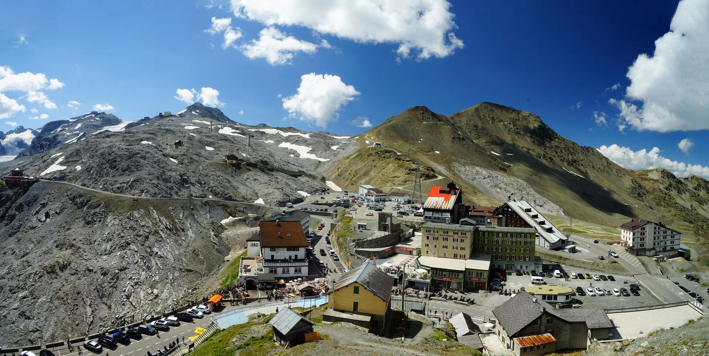
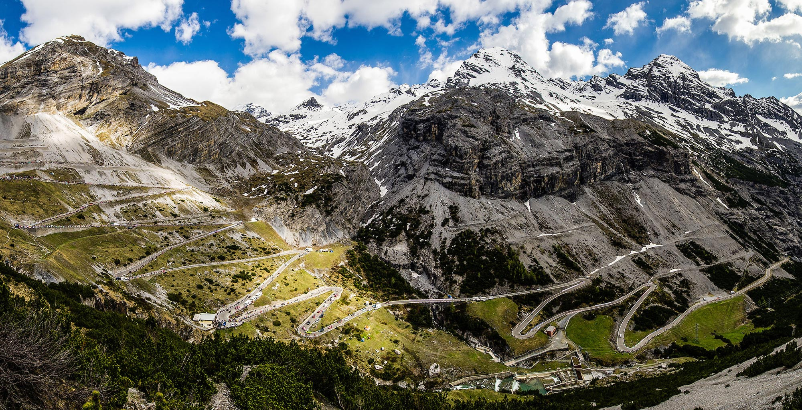
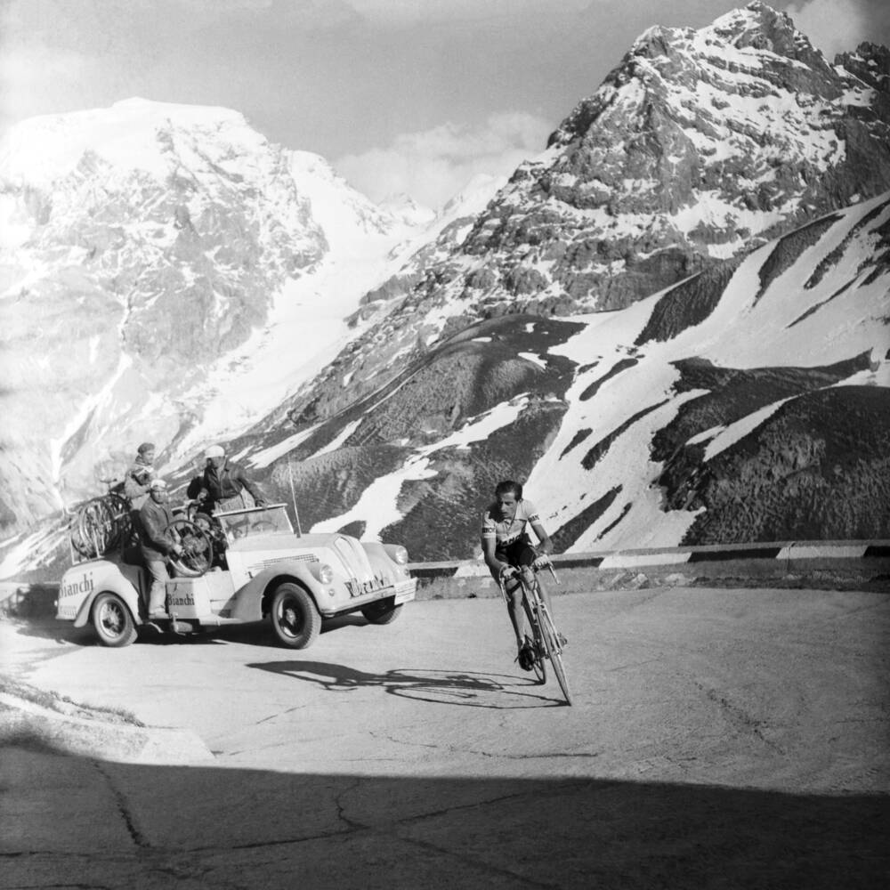

The County of Bormio
The Stelvio Pass is the highest road pass in Italy, with its 2758 m above sea level it is also the second in Europe. Nestled in the pristine nature of a large area of the Stelvio National Park, surrounded by the imposing peaks of the chain Ortles-Cevedale chain, the Stelvio glacier is the largest summer ski area at high altitude in the Alps, more than twenty kilometers of slopes between the Pass and Mount Crystal (3450 m) allow the great champions of alpine skiing to train for the winter season. In addition to ski tourism, the Pass is also a popular destination for cyclists, motorcyclists, hikers and visitors of the remains of the First World War. The road that reaches the Pass links Bormio and Alta Valtellina with Trafoi and Val Venosta. It is characterized by about 48 hairpin bends on the Alto Adige side, and 36 on the Lombard side, where it is possible to reach the Santa Maria or Umbrail Pass (2503 m) allowing entry to Switzerland directly in Val Monastero.
The Stelvio road and the ski slopes are open from May o November, during the whole winter season the Pass is closed on all three sides. The Stelvio way already existed in the Middle Ages, but it looked like a unpaved mountain trail and the crossing was dangerous. It was carriageabled thanks to Emperor Francis I of Austria, who wanted a new road connecting the Vinschgau with Valtellina to reach Milan which was Austrian territory. The project was entrusted to Carlo Donegani (1775-1845) chief engineer of the Province of Sondrio, high-mountain expert and former designer of Splügenpass. Works began in 1822 employing up to 2500 men between workers, engineers and geologists. After only 3 years in 1825 the work was completed and the new road was inaugurated in the presence of the Emperor himself. Until 1915, the stagecoaches crossed the Pass all year, thanks to the efficient work of snow-shovellers employed in the winter. During the First World War the Pass was the scene of fierce clashes between Italians and Austrians. After the victory, it became Italian and lost its original meaning as a link between Vienna and Milan, for this reason it was decided to close it in winter.
The Stelvio has been famous in the cycling world since 1953, when it was included in the route of the Tour of Italy (Giro d’Italia), becoming the scene of one of the last great sporting achievements of Fausto Coppi. Every time the Giro passes, this is known as “Cima Coppi”, the highest step of the race. The Stelvio Pass was stage finish line of Giro d’Italia since 1953 (Coppi’s victory). The climb (36 hairpin bends) is fascinating and challenging. The Lombard side road starts in Bormio and is about 21 km long with average gradients of 7%, maximum of 12% and over 1500 m drop. Every year cycling races for amateurs are held on the roads of the Stelvio pass.
